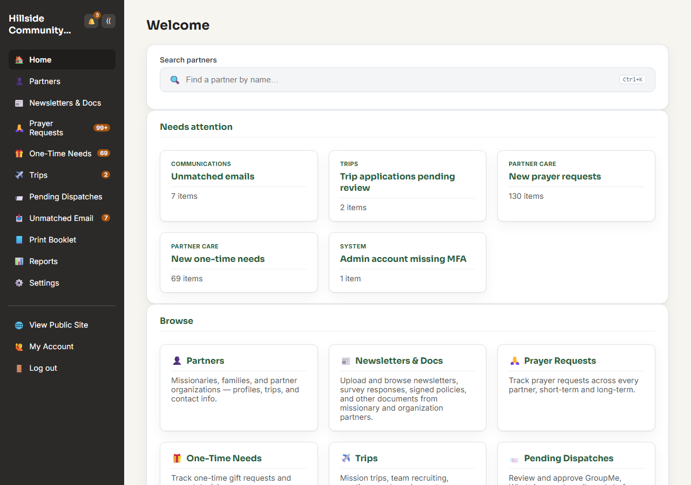
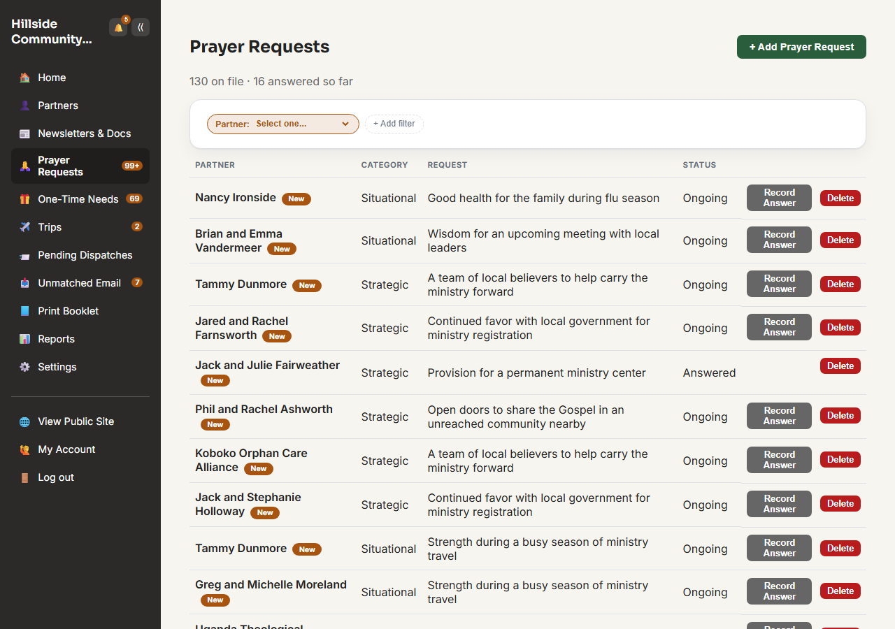
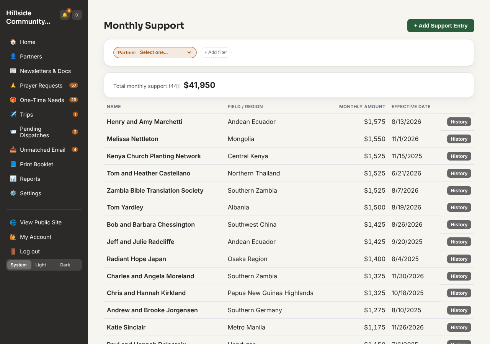
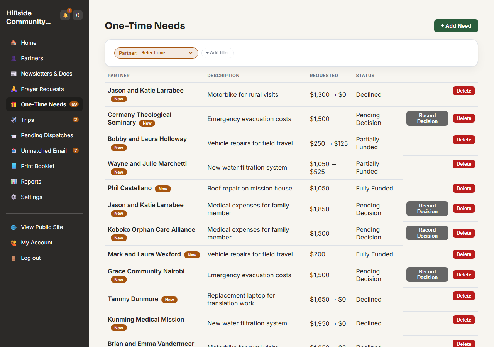
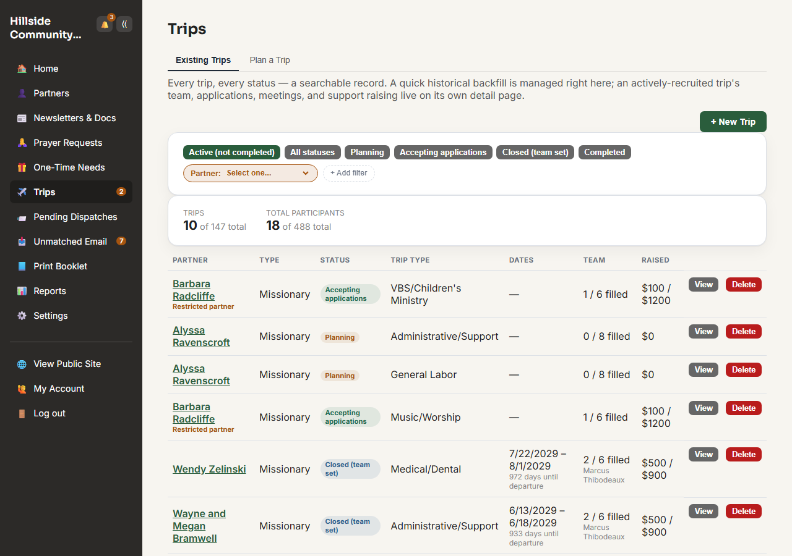
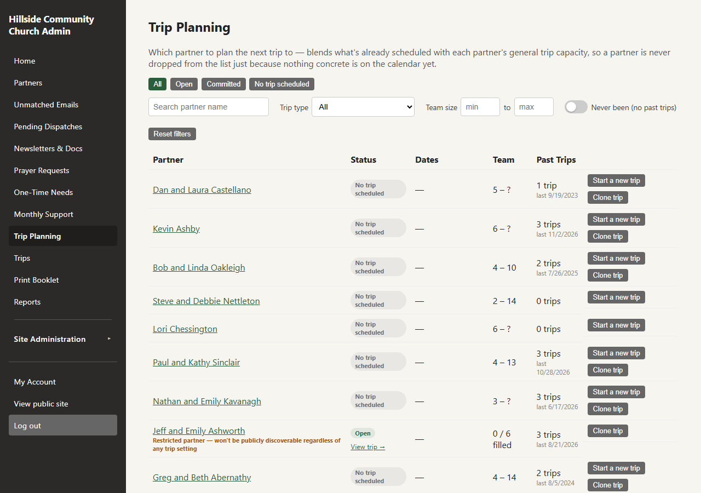
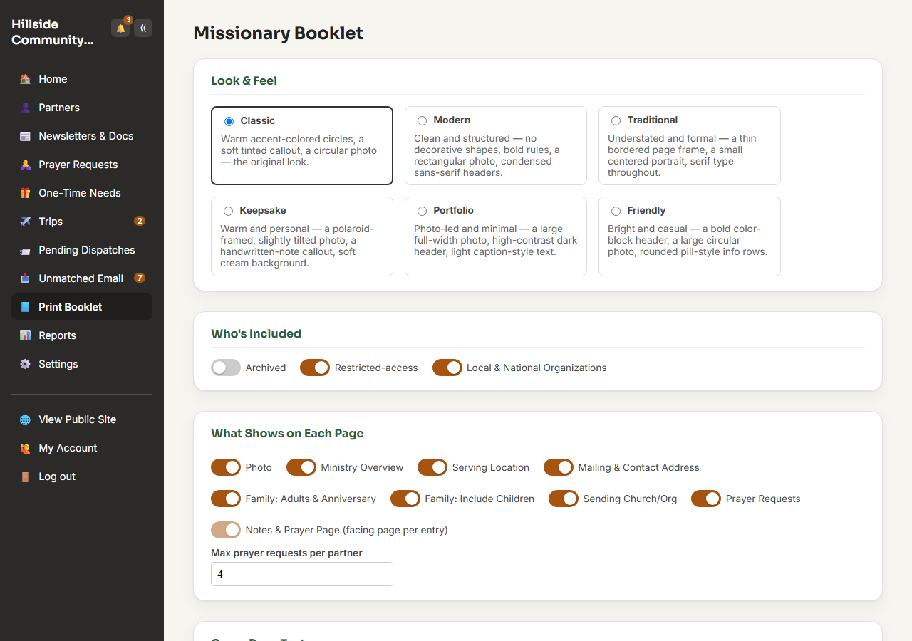
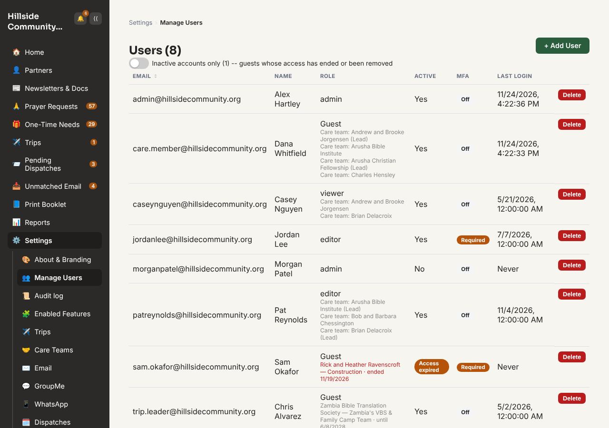
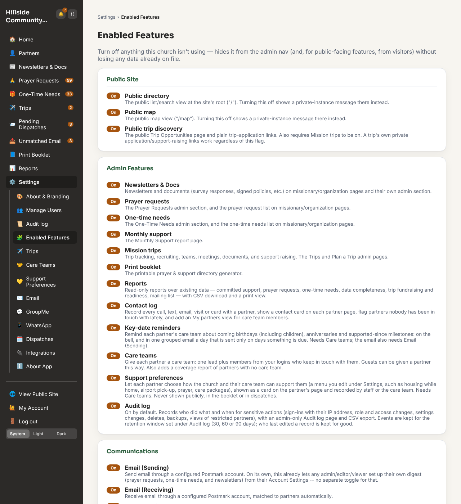
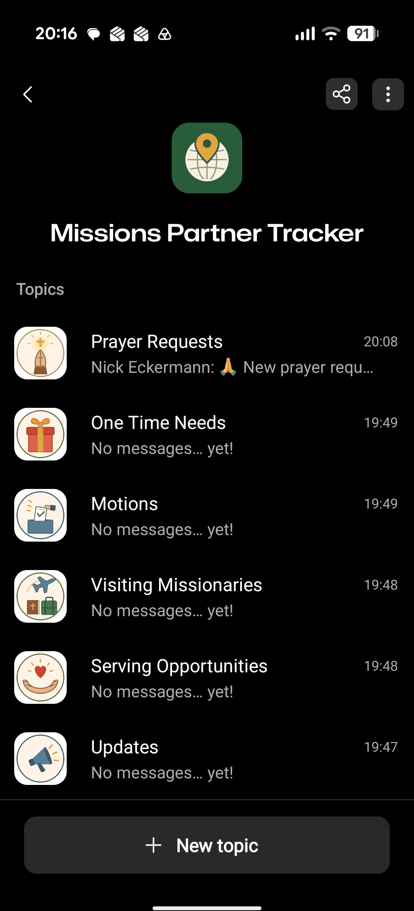

A home for the missionaries and organizations your church supports: who they are, how to pray for them, who is looking after them, and when someone last heard from them. Share them with your congregation, and make sure nobody falls through the cracks. Free, open source, and yours to run.
Open source (MIT) · Your church's name, logo and colors · Your data stays in your own database
Beta (before 1.0): an upgrade may mean starting the database over, so don't treat it as your only copy of anything yet.
Give every partner a care team: a lead and a few church members who keep in touch, including members who only get a limited guest login. The app reminds them about birthdays and anniversaries, shows who has gone quiet, and keeps a simple log of every call, card and visit, so when someone asks “when did we last hear from them?” there is an answer.
Record how each partner would like your church to support them (a care package, a visit from a team, someone to be honest with) from a menu your church writes. Keep it private to staff and their care team, and see at a glance who wants what, and who has never been asked.
Wrap up a mission trip in one short walk-through: what the team did, what went well, what was hard, and what the partner needs next, plus a thank-you for the partner. The notes live with the trip and show up for the partner's care team.
A searchable partner directory plus an interactive world map with an auto "tour" fly-through. Partners marked restricted are automatically shown with initials only, no contact info, no precise location, and a generic security-conscious description — safe to publish even for partners serving in access-sensitive countries.
Add, edit, and manage every missionary and organization in one filterable, searchable list, support tracking, mission trip recruiting, teams & support raising, furlough/church-visit scheduling, and private Newsletters & Docs uploads — all with role-based user permissions.
Upload a newsletter, survey response, signed policy acknowledgment, email record, or other office document against any partner, picking its Kind from one list instead of choosing between two separate newsletter and document systems — pick "Other" and type your own label when none of the built-in kinds fit. Reclassify a mis-filed upload the same way you'd edit anything else, no separate action required. AI Request Scanning reads any uploaded file for prayer requests and one-time needs waiting to be pulled out, and once one's added, a direct link back to the source file travels with it everywhere that request or need shows up — on the partner's page, in GroupMe or WhatsApp, in the admin email digest.
Status and visibility, ministry overview, family and location details, financial support, trips, and a running communication history — prayer requests, newsletters & docs, church visits, and furlough — grouped into logical sections so everything about a partner lives on their one profile page without feeling like one giant form. Long-running lists show the most recent few with a Load More button, rather than dumping years of history at once.
Export your full partner list as a printable booklet — one page per partner, photo and all — for a bulletin insert, a missions conference handout, or a binder at the welcome desk.
A hub organized by the question you're asking — support, prayer, trips, contacts, system access, and more — with sixteen reports across nine groups. Every one has URL-backed filters, summary tiles you can click through, a chart, CSV download, and a print view; save a set of filters for later, share it with your team, or have it emailed to you on a schedule.
Branding and About Church settings control the church's name, logo, three independent brand colors plus a font choice, and the term it uses for its partners (e.g. "Go Team Partners" instead of "Missionaries") — everything else in the app reads from that instead of hardcoded copy.
MIT licensed, and your data stays yours. Deploy your own instance on Render with one click, for about $13 a month: one web service plus one Postgres database, which also holds every uploaded photo, newsletter and document, so there is no separate file storage to set up. You will need a Render account with a payment card and a phone with an authenticator app; no terminal and no GitHub account. The Admin Guide walks through it, and the live demo shows what you will get. Beta (before 1.0): an upgrade may mean starting the database over.
Not ready to run a server? A hosted version is not available yet, and nothing is promised. Tell us you would want one and what you would need.
A home dashboard, monthly support totals, one-time need requests, mission trip recruiting, teams, and support raising, the booklet generator itself, user management, church info, and every other admin-only prayer request in one place.










Turn on Mission Trips for the whole recruiting pipeline — an application form, a confirmed team, per-participant fundraising pages, and reusable document/e-signature requirement templates, including a ready-to-use Minor Travel Release & Consent Form for a trip with minors on it. Schedule meetings with a title, an agenda, and a join link, and participants get a one-click Yes/No/Maybe RSVP and an Add-to-calendar link right from the invite email — and again on their own self-service page, no login required either way. From that same page, a participant can upload a required document or sign an e-signature themselves — no admin has to be the middleman. Off by default; turn it on from Settings → Enabled Features. A separate Public trip discovery toggle, nested under it, adds a public listing page and plain application links for anyone browsing with no link in hand — leave it off to run trips entirely by private link instead.
Each partner's public page can pull live country statistics from the Joshua Project — population, primary religion, percent evangelical, and how reached the country is — so visitors see the spiritual need behind the mission, not just a bio. Opt-in: turn it on with a free Joshua Project API key from Settings.
Connect a GroupMe group and pick a Topic for each — prayer requests, one-time needs, and newsletters each get their own — and every new one posts there automatically, with a direct link for newsletters, so your team sees it the moment it's added without checking the admin dashboard. Nothing posts anywhere until a group and access token are connected.
A fully independent alternative or addition to GroupMe — its own connection, its own groups, its own on/off switch, not a layer built on top of GroupMe's. Link a dedicated phone number, pick a WhatsApp community, then a group for prayer requests, one-time needs, and newsletters, and every new one posts there the moment it's added. Because it's an unofficial connection (the number links the way WhatsApp Web does), a dedicated number — never a personal one — is a must. See how an event actually flows across every channel for the full picture of how GroupMe, WhatsApp, and email all fit together.
Each admin opts into their own digest from their account settings — their own cadence, every partner or just the ones they pick — covering prayer requests, one-time needs, and newsletters together. Anything marked urgent skips that schedule and goes out right away instead. Receive email too — a message from a partner's known address gets filed as a newsletter automatically, and anything from an address the app doesn't recognize lands in Unmatched Emails for a quick manual assign. Each direction connects independently to the same Postmark account from Site Administration.
A public Subscribe page, plus a "Follow this partner" form on every partner's profile, let your congregation — or anyone — sign up for prayer-request updates with just an email address. Double opt-in, so nothing goes out until they confirm; scoped to every partner or a handful of specific ones, on whatever cadence they pick. Deliberately narrower than the admin digest above: prayer requests only, never a one-time need's financial details or a newsletter.